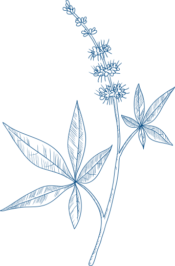

Фитология:«голубая кровь» лекарственных препаратов на основе растений
Средства, созданные по принципу фитониринга, – это «голубая кровь» лекарственных препаратов, созданных на основе растений. Концепцию фитониринга придумала, а впоследствии и запатентовала компания «Бионорика». Для производства лекарственных препаратов на протяжении более 88 лет «Бионорика» сочетает знания в области фитотерапии с современными фармацевтическими исследованиями, раскрывая огромный потенциал активных веществ в растениях. Задача фитониринга – усилить контроль на всех этапах создания лекарственного средства: Начиная с выбора места для будущих плантаций для выращивания растений и заканчивая бережными способами сбора сырья и исследованиями сложных сочетаний действующих веществ, обнаруживаемых в лекарственных растениях.
Среди растений, которые специалисты «Бионорики» используют для производства своих лекарственных препаратов, – самые целебные представители европейской флоры: от известной всем ромашки до редких лекарственных растений.
Предлагаем вам вместе с нами совершить путешествие по Атласу растений и узнать, где выращиваются лекарственные растения, которые «Бионорика» использует для производства.
 ПервоцветКраснокнижное растение, которое, тем не менее, можно нередко встретить на приусадебных участках. Чрезвычайно полезно для лечения простуд и воспалений придаточных пазух носа, при острых и хронических бронхитах. Экстракт цветков содержится в препарате для лечения заболеваний носа и околоносовых пазух «Синупрет», экстракты корневища – в средстве от бронхита «Бронхипрет».
ПервоцветКраснокнижное растение, которое, тем не менее, можно нередко встретить на приусадебных участках. Чрезвычайно полезно для лечения простуд и воспалений придаточных пазух носа, при острых и хронических бронхитах. Экстракт цветков содержится в препарате для лечения заболеваний носа и околоносовых пазух «Синупрет», экстракты корневища – в средстве от бронхита «Бронхипрет». ХвощХвощ – одно из древнейших растений на земле, существовавшее еще во времена динозавров наряду с папоротниками. В хвоще много кремниевой кислоты, которая способствует обмену веществ и лучшему кровообращению. А его молодые побеги – это настоящий кладезь сапонинов и флавоноидов с противомикробным и противовоспалительным действием. Последние включены в состав препарата «Тонзилгон», применяющегося для лечения заболеваний горла и миндалин.
 Золототысячник обыкновенныйЗолототысячник обыкновенный – редкое лекарственное растение (в Германии защищено Федеральным законом о сохранении видов) с сильным антибактериальным и противовоспалительным действием. Входит в состав препарата «Канефрон», который используется для лечения и профилактики хронических инфекций мочевыводящих путей и мочекаменной болезни.
Золототысячник обыкновенныйЗолототысячник обыкновенный – редкое лекарственное растение (в Германии защищено Федеральным законом о сохранении видов) с сильным антибактериальным и противовоспалительным действием. Входит в состав препарата «Канефрон», который используется для лечения и профилактики хронических инфекций мочевыводящих путей и мочекаменной болезни. Ромашка лекарственнаяСамое полезное в этом известном всем растении – цветки: именно в них содержатся ценные эфирные масла, слизь и флавоноиды. Ромашка оказывает мощное противомикробное действие, благодаря чему ее издревле используют для лечения заболеваний горла. Входит в состав препарата «Тонзилгон».
Ромашка лекарственнаяСамое полезное в этом известном всем растении – цветки: именно в них содержатся ценные эфирные масла, слизь и флавоноиды. Ромашка оказывает мощное противомикробное действие, благодаря чему ее издревле используют для лечения заболеваний горла. Входит в состав препарата «Тонзилгон». Черная бузинаЭтот распространенный по всей Европе кустарник может достигать в высоту 8 метров, а его ягоды широко используются для приготовления кондитерских изделий. Впрочем, куда полезнее ягод белые душистые цветы бузины – знаменитое потогонное и противосудорожное средство. В современной фитотерапии цветки бузины чаще всего используются для разжижения мокроты. В составе препарата «Синупрет» активные вещества цветков в сочетании с экстрактами других четырех растений хорошо проявляют себя при лечении хронических воспалений придаточных пазух носа.
ВербенаМноголетнее травянистое растение с белыми и светло-фиолетовыми цветками, собранными в верхушке стебля. Народное название этого растения – святая трава: в древности вербену использовали для магических и религиозных ритуалов. Современная медицина ценит вербену за ее антисекреторные и противовирусные свойства – именно с этой целью она включена в состав растительного препарата «Синупрет» в комбинации с другими растениями, использующимися для лечения заболеваний горла, полости носа и бронхов.
ЩавельНе растение, а сокровище. О том, что самые вкусные летние щи получаются именно из щавеля, знают все. А знаете ли вы, что это еще и богатый источник витамина С, мощное противовоспалительное и антибактериальное средство? Вместе с цветами первоцвета, корнем горечавки, травой вербены и цветками бузины щавель входит в состав средства «Синупрет», которое назначают для лечения острых риносинуситов.
ВитексПолное название этого длинного (до 5–6 метров в высоту) прибрежного кустарника – витекс священный. По своим лекарственным свойствам это растение действительно священное – еще Гиппократ рекомендовал смешивать листья этого растения с вином для борьбы с кровотечениями и ускорения отторжения плаценты после родов. В современной медицине его активно применяют для нормализации нарушений менструального цикла, лечения многих гинекологических заболеваний. Высококачественные экстракты витекса входят в состав растительных препаратов «Мастодион» и «Циклодинон», предназначенных для лечения мастопатии и нормализации второй фазы менструального цикла.
 ОдуванчикОдуванчик применяли для самых разных целей – и для лечения пищеварительных органов, и для очищения крови. Особенно ценны иммуномодулирующие и противовоспалительные свойства одуванчика, которые и стали основанием для включения его в состав «Тонзилгона».
ОдуванчикОдуванчик применяли для самых разных целей – и для лечения пищеварительных органов, и для очищения крови. Особенно ценны иммуномодулирующие и противовоспалительные свойства одуванчика, которые и стали основанием для включения его в состав «Тонзилгона».  ТысячелистникБотаническое название этого растения Achillea происходит от имени греческого героя Ахилла, который якобы использовал его для лечения ран. Современных специалистов в тысячелистнике привлекают противовоспалительные и противомикробные соединения, необходимые для лечения заболеваний горла.
ТысячелистникБотаническое название этого растения Achillea происходит от имени греческого героя Ахилла, который якобы использовал его для лечения ран. Современных специалистов в тысячелистнике привлекают противовоспалительные и противомикробные соединения, необходимые для лечения заболеваний горла.  Розмарин лекарственныйМы все добавляем его в мясо или рыбу, когда готовим, не особенно задумываясь о полезных свойствах этого растения. А они, между прочим, многочисленны. Здесь и противовоспалительное, и противосудорожное, и мочегонное действие. Отыскать розмарин можно в препарате для лечения мочевыводящих путей «Канефрон».
Розмарин лекарственныйМы все добавляем его в мясо или рыбу, когда готовим, не особенно задумываясь о полезных свойствах этого растения. А они, между прочим, многочисленны. Здесь и противовоспалительное, и противосудорожное, и мочегонное действие. Отыскать розмарин можно в препарате для лечения мочевыводящих путей «Канефрон». Атлас растений